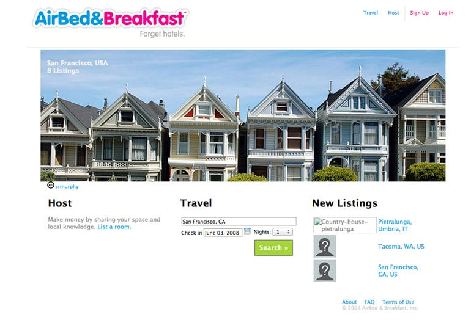

Lee esto si:
- Tienes una idea que parece ser un buen negocio
- Estás pensando en un nuevo proyecto y aún no construyes tu producto
- Estás construyendo tu producto pero la vida se te va desarrollándolo y aún nadie te compra
Si te mueves por el mundo de la innovación, seguramente has escuchado el término MVP. Si es un concepto nuevo para ti, te dejo la definición de wikipedia:
El producto viable mínimo (MVP, del inglés Minimum Viable Product) es un producto con suficientes características para satisfacer a los clientes iniciales, y proporcionar retroalimentación para el desarrollo futuro
Por favor recuerda la palabra retroalimentación mientras lees esta publicación, ya que es el corazón del MVP y clave al momento de desarrollar un nuevo producto.
¿Por qué construir un Producto Mínimo Viable?
A veces es más inteligente construir cosas que tratar de hacer todo correcto.
Sobre todo, este es el caso cuando estás tratando con problemas donde tienes incertidumbre sobre cómo se soluciona.
Construir y probar en terreno algo rápido e iterar. Ponerlo en manos del cliente y mejorarlo con el tiempo es la ventaja al pensar en un producto mínimo viable.
El camino incorrecto en estos casos sería hacer 100 entrevistas o estudiar a todos tus competidores. Podrían parecer el camino correcto, pero probablemente aprendes más sobre los problemas de tu clientes que de las soluciones que necesitan.
El momento de mayor aprendizaje lo logras cuando pones el producto en manos de ellos y te lo lanzan por la cabeza o te sorprenden con una sonrisa en el rostro. En ambos caso estás aprendiendo cosas valiosas.
Objetivos antes de lanzar un nuevo producto
Estos son los 5 pasos que deberías seguir para lanzar un nuevo producto:
- Construir algo usable rápido
- Obtener clientes iniciales
- Hablar con tus usuarios para conseguir feedback
- Iterar y mejorar el producto
- Repetir 3 constantemente
Sí, simplifiqué mucho los pasos, sobretodo pasar de construir a obtener clientes (si hay interés, preparo una publicación sobre eso).
Lo importante es que la historia muestra que después de 5 o 6 iteraciones vas a tener un producto completamente distinto y mucho más depurado.
Imagina que cada iteración son 2 semanas, 6 iteraciones serían 3 meses. En estos 3 meses pusiste el producto frente a tus clientes 6 veces. Tuviste 6 oportunidades para aprender sobre el uso del producto, si este resuelve el problema, qué funciona y qué no.
Estarás de acuerdo conmigo que aprendes más de esta forma que trabajando 3 meses entre 4 paredes.
Características de un MVP
Al momento de construir un MVP, recordando que es algo mínimo y pequeño, tu propuesta debería tener los siguientes 3 puntos en cuenta:
- Deben ser rápidos de construir (semanas y no meses)
- Debe ser muy limitado en funcionalidades
- Debe atraer a un pequeño grupo de usuarios
Cuando construyes un MVP, hacer algo que un pequeño grupo ame es más importante que satisfacer todas las necesidades de un grupo grande.
Si tienes miedo a empezar con algo pequeño, te entiendo. Yo he estado en la situación de presentar un MVP con la intensión de venderlo como solución.
Y asusta. Piensas que a la gente no le va a gustar y que no te van a volver a hablar.
Acá es clave buscar a la gente adecuada para estas primeras interacciones. Los primeros clientes deben ser early adopters, los que se arriesgan a probar cosas nuevas o tienen un problema tan grande que no tienen miedo a usar tu solución.
No hay que tener miedo en perderlos. Solo ajusta las expectativas, y si mejoras constantemente y los acompañas, se van a quedar contigo.
El ejemplo clásico

Estás viendo la página de AirBnB del año 2008. Dejando fuera lo estético, creo que es fácil ver que le falta mucho de las funcionalidades que AirBnB tiene el día de hoy. Un producto completamente distinto:
Sin pagos en línea
Sin vista en mapa
Las casas debían tener una cama inflable (el Airbed en AirBnB)
Lo importante es que estaba solucionando un problema y lo hacía más eficiente que otros. Un sitio para encontrar dónde alojar que más barato que un hotel.
AirBnB no esperó tener sistema de pagos, búsqueda en mapas o grandes hosts para lanzar su producto ¿Por qué tú deberías?
Consejos finales para construir un MVP rápidamente
Supongamos que te convencí y estás listo para hacer un MVP de esa idea que tienes en la cabeza. Estos son los pasos que te ayudarán a tener tu MVP en su mínima expresión:
- Date una fecha límite para lanzar
- Escribe los alcances de esta versión
- Corta los alcances menos importantes
- No te enamores de tu MVP, porque va a cambiar
Unas últimas palabras
Ojalá solo entrevistar a 100 usuarios te dieran la solución de qué construir, pero esto no es el caso para nuevos productos.
Los usuarios son expertos en el problema, pero normalmente no tienen todas las respuestas que solucionan su problema. Ese es tu trabajo creando un nuevo producto.
La mejor estrategia para saber cómo solucionar su problema y tener esa conversación es poniendo un MVP que de vergüenza y preguntarle a tu cliente si eso soluciona su problema.
No empiezas tu nuevo negocio con todas las respuestas.
Las primeras fases es todo sobre aprender, tomar algunos de los insights, presentarlo al mercado y ver qué pasa. Todos los aprendizajes vienen después de lanzar. Y un MVP es la forma más rápida para empezar a aprender